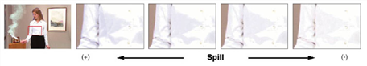
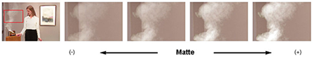
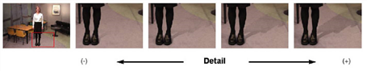

Primatte 的溢出、磨砂和细节采样工具允许您进行精细调整，以平衡复合材料的这些方面。你可以找到这些工具中 操作 Primatte 属性面板中的下拉菜单。
使用
溢出 ()
和
溢出 (-)
模式下，您可以通过重复采样引用的颜色区域，逐渐删除或恢复前景对象上的溢出强度。的区别
溢出海绵
工具是
溢出海绵
在一个级别上删除单个操作中的溢出组件，并且不允许第二次采样相同的像素。即使只是少量的泄漏需要被移除,
溢出海绵
删除预设量，而不允许任何精细调整。要使用
溢出 ()
和
溢出 (-)
工具:

| 1。 | 选择 溢出 (-) 来自的采样工具 操作 下拉菜单。 |
| 2. | 在查看器中，放大一个有蓝色边缘的区域。 |
| 3. | 点击一个带有溢出的像素。 |
| 4. | 重复点击增量删除溢出。继续此操作，直到达到所需的结果。 |
| 5. | 要添加溢出，请选择 溢出 (+) 工具和重复步骤从 2 到 4。 |
的 哑光 () 和 哑光 (-) 模式用于加厚或减弱遮罩信息。如果你想在前景对象上有一个更薄的阴影，你可以使用 哑光 (-) 模式尽可能多次，使其更加透明。另一方面，您可以使用 哑光 () 模式使该颜色区域的哑光变厚。

的 详细信息 () 和 详细信息 (-) 模式是一个精致的版本 清洁 BG 噪音 和 恢复详细信息 。例如，当您在支持区域看到一些稀释的噪音，但不想完全删除它，因为它会影响不同区域的一些细节时，请尝试使用 详细信息 (-) 。当在像素上进行多个采样时，它会逐渐衰减噪声。当重要的细节开始消失时，你应该停止取样。

|
|